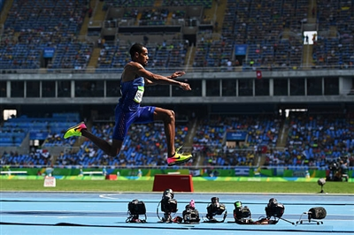

ПРИВЕТ УЧАСТНИКАМ СОРЕВНОВАНИЙ! |
Виды спорта: |
Прыжки в длинуПрыжки в длину — дисциплина, входящая в программу тренировок и состязаний школьной физкультуры, легкой атлетики и Олимпийских игр. Умение хорошо прыгать и легко уложиться в указанный норматив — показатель хорошей физической подготовки человека. В данном материале РИА Новости разбираем особенности техники упражнения, из каких фаз состоит прыжок и как научиться хорошо прыгать с места или с разбега. Прыжки в длину — упражнение для общего физического развития. Являются одним из основных упражнений тренировочного процесса во многих видах спорта: в спортивной гимнастике, легкой атлетике и легкоатлетических многоборьях и т. д. Как и другие прыжковые упражнения, дисциплина улучшает ловкость, прыгучесть, скорость и подвижность человека. Также прыжки в длину отлично укрепляют мышцы ног и корпуса, что немаловажно для достижения высоких результатов в спорте. Виды, техника и особенности выполнения. Существует 4 вида упражнений, каждый из которых имеет определенные особенности, касающихся выполнения отдельных движений при полете. Самая трудная техника прыжков с места, так как требует максимальных усилий при выполнении. В отличие от стандартных прыжков с разбегом, спортсмену нужно сделать в воздухе во время полета 2,5-3,5 шага, "пробежав по воздуху". Таким образом, обеспечивается хорошее приземление, так как атлет находится в выгодном положении, немного сгибая корпус при постановке ног. Некоторые спортсмены используют упражнение для увеличения силы ног, приземляясь не на упорную, а на маховую ногу. Также такой вариант прыжков предусматривает использование препятствий, что помогает атлету научиться прыгать выше, увеличить выносливость и координацию. |
ГЛАВНОЕ НЕ ПОБЕДА, А УЧАСТИЕ! |
|